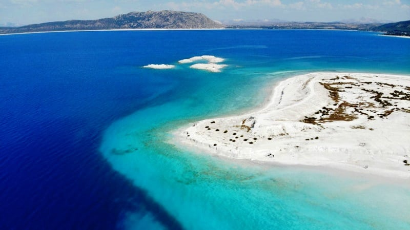
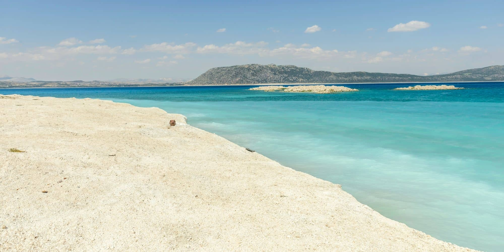
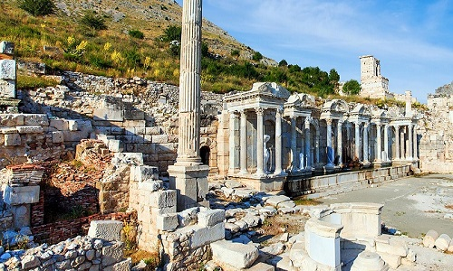

Burdur Hakkında
Burdur, Salda Gölü gibi eşsiz doğal güzellikleri ve tarihi zenginlikleriyle ünlüdür. Hem doğa severler hem de tarih tutkunları için ideal bir yerdir.
Ziyaret Edilmesi Gereken Yerler:
- Salda Gölü: Türkiye'nin Maldivler'i olarak bilinen, beyaz kumsalları ve turkuaz suyu ile ünlüdür.
- Burdur Arkeoloji Müzesi: Şehrin tarihine ışık tutan antik eserlerin sergilendiği önemli bir müze.
- Sagalassos Antik Kenti: Antik Roma dönemine ait kalıntılarıyla etkileyici bir arkeolojik alan.